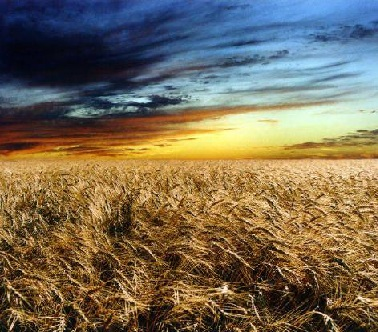
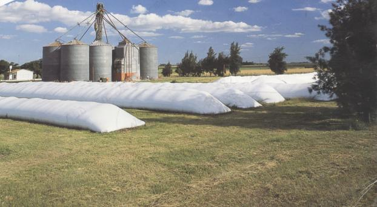

Quienes somos
CCA es una consultora independiente, formada por profesionales meteorólogos y de especialidades afines, dedicada a las interacciones entre el Clima y la Agricultira.
CCA posee una amplia trayectoria en tareas de consultaría a Exportadores, Corredores/traders, Pools de Siembra, Acopiadores, Productores y Organismos Oficiales.
